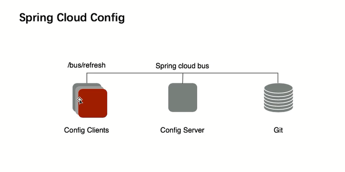
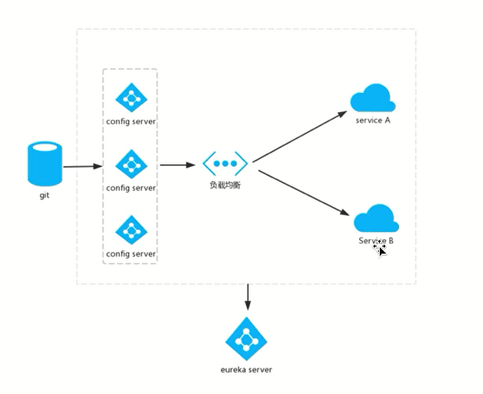
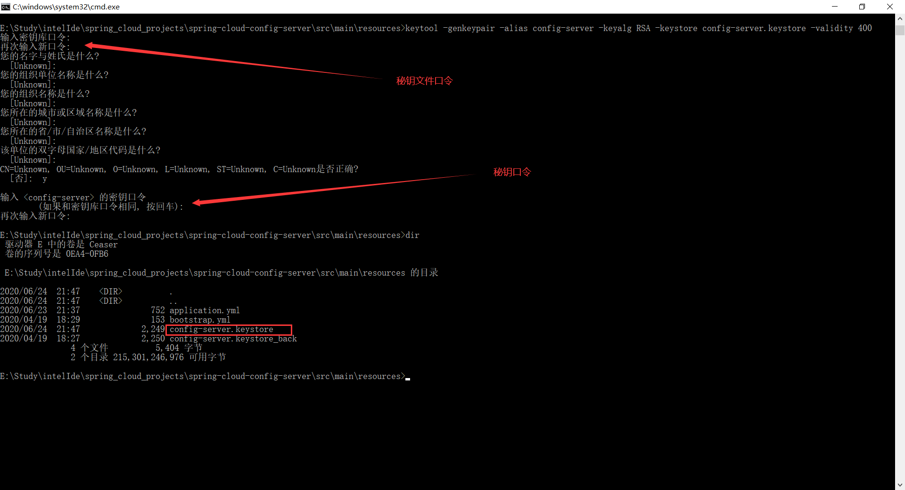

spring cloud config
用来为分布式系统中的基础设置和微服务应用提供集中化的外部配置支持，它分为服务端与客户端两个部分，其中服务端也称为分布式配置中心，他是一个独立的微服务应用，用来连接配置仓库并为客户端提供获取配置信息，加密/解密信息等访问接口；而客户端则是微服务架构中的各个微服务应用或基础设施，他们通过指定的配置中心来管理应用资源与业务相关的配置内容，并在启动的时候从配置中心获取和加载配置信息。

spring cloud config实现了对服务端和客户端中环境变量和属性配置的抽象映射，他是除了适用于spring构建的应用程序之外，也可以在任何其他语言运行的应用程序中使用，由于spring cloud config实现的配置中心默认采用git来存储配置信息，所以使用spring cloud config构建的配置服务器，天然就支持对微服务应用配置信息的版本管理，并且可以通过git客户端工具来方便的管理和访问配置内容。当然他也提供了对其他存储方式的支持，比如svn仓库，本地化文件系统。
spring cloud config 文件与访问方式剖析
- 仓库中的配置文件会被转换为web接口，访问请参考以下的规则
- {application}/{profile}/{label}
- {application}-{profile}.yml
- {label}/{application}-{profile}.yml
- {application}/{profile}.preperties
- {label}/{application}-{profile}.properties
- 以config-client-dev为例，它的application是config-client（这里的application是存储配置的应用程序名字），profile是dev。
client会根据填写的参数来选择读取对应的配置。
spring cloud config的高可用

加密解密操作
涉及到的改动点：spring-cloud-config-server、github仓库
oracle官方加密、解密的支持：https://www.oracle.com/java/technologies/javase-jce8-downloads.html
下载：https://www.oracle.com/webapps/redirect/signon?nexturl=http://download.oracle.com/otn-pub/java/jce/8/jce_policy-8.zip
解压之后的local_policy.jar、US_export_policy.jar替换jdk目录C:\Program Files\Java\jdk1.8.0_111\jre\lib\security下的文件。生成密钥对:在E:\Study\intelIde\spring_cloud_projects\spring-cloud-config-server\src\main\resources>下执行：
keytool -genkeypair -alias config-server -keyalg RSA -keystore config-server.keystore -validity 400
alias:密钥对的别名
keyalg：生成算法
keystore：秘钥对文件名
validity：有效期400天

config-server.keystore是一个二进制文件- 配置:
1
2
3
4
5
6encrypt:
key-store:
location: config-server.keystore # 这个文件的存储位置在真实的线上环境一般是使用一个环境变量制定，不会直接写一个地址，为了安全考虑
alias: config-server # keytool生成秘钥的时候指定的alias
password: 123456
secret: 123456
- 配置:
执行加密
curl -X POST -d ‘http://redis-develop.host' http://localhost:7000/encrypt
会生成一个加密的字符串A,此时修改https://github.com/1156721874/config-test/blob/master/config/config-develop.properties 的
redis.host值为:1
redis.host={cipher}加密后的字符串A
解密测试
curl -X POST -d ‘加密后的字符串A’ http://localhost:7000/decrypt
解密之后的值会解密出来浏览器访问spring-cloud-config-client的地址:http://localhost:8000/hosts
加载出来的数据都是自动解密的。
动态配置生效
spring-cloud-config-client配置端点：
1 | management: |
会多出来一个refresh的端点.
spring-cloud-config-client属性的动态加载配置:
1 | @Configuration |
即加入一个@RefreshScope注解。
此时修改github的https://github.com/1156721874/config-test/blob/master/config/config-develop.properties配置，然后浏览器访问spring-cloud-config-client的地址:http://localhost:8000/hosts
得到的数据依然没有更新。
为了让修改生效 我们访问：http://localhost:8000/actuator/refresh
刷新一下本地的配置信息，这个时候spring-cloud-config-client和spring-cloud-config-server都会有刷新的动作，确切的说是client远程通知server更新。
再次访问spring-cloud-config-client的地址:http://localhost:8000/hosts
得到的信息已经得到更新！实现了动态加载。
这里可以使用github的webhoke.
客户端发现服务端的方式
客户端配置：
1 | spring: |
bus消息总线实现配置自动刷新
客户端和服务端同时加入rabbitmq的依赖：
1 | dependencies { |
客户端和服务端的配置
客户端和服务端同时配置端点：
1 | management: |
配置端点是为了打开刷新的能力
rabbitmq的配置
客户端和服务端同时配置
1 | rabbitmq: |
验证
- 启动服务端、客户端，在服务端会看到一个[/actuator/bus-refresh]
- 改变github的一个配置
- 刷新server: curl -X POST http://localhost:7000/actuator/bus-refresh
- 服务端刷新完之后，会通过bus总线通知所有注册的客户端，所有的客户端也会得到这样一个通知，使得配置在所有的客户端生效
- 访问其中一个客户端：http://localhost:8000/hosts 会发现配置生效了。
和之前说的刷新客户端的方式，这种bus的方式是刷新的服务端，然后通知到所有的客户端。但是也是离不开webhoke的帮助
本期代码：
https://github.com/1156721874/spring_cloud_projects/tree/master/spring-cloud-config-server
https://github.com/1156721874/spring_cloud_projects/tree/master/spring-cloud-config-client
https://github.com/1156721874/config-test